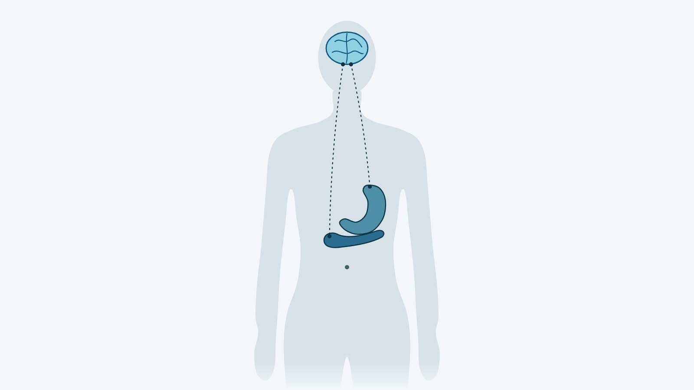

Семаглутид (Ozempic®): что это, как действует и для чего его назначают

Что такое семаглутид: короткий ответ
Семаглутид — действующее вещество препарата Ozempic® (Оземпик), аналог человеческого гормона GLP-1 (глюкагоноподобного пептида-1). Он работает как агонист рецепторов GLP-1: включает те же рецепторы, что и собственный гормон, и за счёт этого влияет на уровень сахара в крови и аппетит. В Украине у Ozempic® одно официальное показание: недостаточно контролируемый сахарный диабет 2 типа. Для контроля массы тела в Украине зарегистрирован другой препарат семаглутида, Wegovy®.
Общий обзор этого класса лекарств есть в статье об инъекциях GLP-1.
Как действует семаглутид
Аминокислотная последовательность семаглутида на 94 % совпадает с человеческим GLP-1. По инструкции Ozempic®, его влияние на глюкозу и аппетит опосредовано рецепторами GLP-1 в поджелудочной железе и головном мозге.

Поджелудочная железа и сахар крови
Семаглутид усиливает секрецию инсулина и подавляет секрецию глюкагона только тогда, когда глюкоза в крови повышена. При гипогликемии он уменьшает секрецию инсулина и не мешает секреции глюкагона; такое действие называют глюкозозависимым. По инструкции, при монотерапии семаглутидом эпизодов тяжёлой гипогликемии не наблюдали.
Мозг и аппетит
В исследованиях, на которые ссылается инструкция, люди на семаглутиде во время трёх приёмов пищи «вволю» съедали на 18–35 % меньше калорий, чем на плацебо. Аппетит снижался и натощак, и после еды, ослабевала тяга к перекусам и к жирной пище. По европейской инструкции Wegovy®, семаглутид напрямую действует на участки мозга, которые регулируют потребление пищи: гипоталамус и ствол мозга (данные исследований на животных). Масса тела и жировой ткани уменьшается именно за счёт меньшего потребления калорий и сниженного аппетита.
Желудок
Семаглутид немного задерживает опорожнение желудка в первые часы после еды. Поэтому он может менять скорость всасывания одновременно принятых таблеток и повышать риск аспирации во время наркоза, то есть попадания содержимого желудка в дыхательные пути.
Официальное показание Ozempic® в Украине
Ozempic® (в Госреестре — ОЗЕМПІК®) зарегистрирован в Украине, регистрационное удостоверение UA/19176/01/01, и отпускается по рецепту. По украинской инструкции (дата последнего пересмотра 15.07.2026), препарат применяют «при недостаточно контролируемом сахарном диабете 2 типа как дополнение к диете и физическим упражнениям» (здесь и ниже перевод с украинского):
- «как монотерапию, когда метформин считается нецелесообразным препаратом из-за непереносимости или противопоказаний»;
- «как дополнение к другим лекарственным средствам для лечения сахарного диабета».
Ожирения и контроля массы тела среди показаний нет. Вес инструкция упоминает в разделе «Фармакодинамика», где описаны результаты исследований, и в разделе «Побочные реакции», где «снижение массы тела» отнесено к частым реакциям.
У людей с диабетом 2 типа на метформине в исследовании SUSTAIN 7 (Lancet Diabetes & Endocrinology, 2018) масса тела за 40 недель снизилась в среднем на 4,6 кг на дозе 0,5 мг и на 6,5 кг на дозе 1 мг. Известные −14,9 % из исследования STEP 1 (NEJM, 2021) получены на семаглутиде 2,4 мг, то есть на дозе Wegovy®, и к Ozempic® не относятся. Подробности есть в статье о результатах Ozempic® в исследованиях.
Противопоказания и предостережения
По украинской инструкции, противопоказание одно: повышенная чувствительность к семаглутиду или к другим компонентам препарата. Остальные ограничения инструкция приводит в разделах «Особенности применения», «Применение в период беременности или кормления грудью» и «Дети»:
- сахарный диабет 1 типа и диабетический кетоацидоз: семаглутид не применяют, он не заменяет инсулин;
- острый панкреатит: при подозрении препарат отменяют, после подтверждения диагноза не возобновляют; при панкреатите в анамнезе применяют с осторожностью;
- сочетание с инсулином или сульфонилмочевиной: растёт риск гипогликемии, поэтому дозу этих лекарств могут уменьшить;
- диабетическая ретинопатия: быстрое улучшение уровня глюкозы связывали с временным усилением ретинопатии;
- застойная сердечная недостаточность IV класса по классификации Нью-Йоркской кардиологической ассоциации (NYHA): опыта лечения нет, применение не рекомендовано;
- тошнота, рвота и диарея: могут вызвать обезвоживание и ухудшение функции почек;
- общий наркоз или глубокая седация: из-за задержки опорожнения желудка растёт риск лёгочной аспирации;
- беременность и грудное вскармливание: семаглутид не применяют, а минимум за 2 месяца до планируемой беременности его отменяют; женщинам репродуктивного возраста рекомендована контрацепция;
- дети до 18 лет: безопасность и эффективность не установлены.
Американская инструкция Ozempic® (FDA) содержит предупреждение в рамке об опухолях C-клеток щитовидной железы у грызунов и противопоказание при медуллярном раке щитовидной железы в личном или семейном анамнезе либо синдроме множественной эндокринной неоплазии 2 типа (MEN 2). В украинской и европейской инструкциях эти данные есть только в доклиническом разделе, а значимость для людей оценена как низкая, хотя и не исключена.
В июне 2025 года комитет EMA по фармаконадзору (PRAC) признал очень редкой побочной реакцией семаглутида неартериитную переднюю ишемическую оптическую нейропатию (NAION), поражение зрительного нерва. Она может встречаться не чаще чем у 1 человека из 10 000. В украинской инструкции Ozempic® (редакция 15.07.2026) NAION не упомянута, а в украинской инструкции Wegovy® она есть.
Побочные реакции коротко
Самые частые побочные реакции Ozempic® касаются пищеварения: тошноту и диарею инструкция относит к очень частым. На дозах 0,5 и 1 мг тошнота возникала у 17,0 % и 19,9 % пациентов, диарея у 12,2 % и 13,3 %, чаще всего в первые месяцы лечения. Из-за реакций со стороны пищеварения лечение прекратили 3,9 % и 5 % пациентов. Полный перечень и тревожные симптомы есть в статье о побочных эффектах Ozempic®.
Молекула и бренды: Ozempic®, Wegovy®, Rybelsus®
Семаглутид — международное название молекулы, а Ozempic®, Wegovy® и Rybelsus® — торговые названия препаратов с ней. Препараты различаются формой, дозами и утверждёнными показаниями, поэтому данные об одном бренде нельзя переносить на другой.
| Препарат | Как применяют | Официальное показание | Госреестр Украины, 31.10.2026 |
|---|---|---|---|
| Ozempic® | инъекция под кожу раз в неделю; в Украине дозы 0,25, 0,5 и 1 мг | сахарный диабет 2 типа (украинская инструкция) | зарегистрирован, по рецепту |
| Wegovy® ФлексТач® | инъекция под кожу раз в неделю; дозы от 0,25 до 2,4 мг | контроль массы тела у взрослых с ожирением или избыточным весом с сопутствующим заболеванием (украинская инструкция) | зарегистрирован с 03.10.2024, по рецепту |
| Wegovy® в таблетках | таблетка раз в день, натощак | контроль массы тела (ЕС, 2026) | не найден |
| Rybelsus® | семаглутид для приёма внутрь | сахарный диабет 2 типа (ЕС) | не найден |
Читая о семаглутиде, смотрите на дозу и бренд: по украинской инструкции Ozempic® дозы выше 1 мг в неделю не рекомендованы, хотя в ЕС и США зарегистрирована доза 2 мг.
[КОММЕНТАРИЙ ВРАЧА: как врач выбирает между Ozempic® и Wegovy® для человека с ожирением; 2–3 предложения]
Частые вопросы
Влияет ли Ozempic® на способность водить машину?
По украинской инструкции, семаглутид не влияет или почти не влияет на способность управлять транспортом. Если его сочетают с сульфонилмочевиной или инсулином, нужны меры предосторожности, чтобы избежать гипогликемии.
Почему Ozempic® вводят всего раз в неделю?
По сравнению с собственным GLP-1 у семаглутида продлённый период полувыведения, около недели. Действие продлевает связывание молекулы с альбумином, белком крови (европейская инструкция Ozempic®). Поэтому препарат вводят раз в неделю в любое время суток, независимо от еды; технику инъекции описывает статья как колоть Ozempic®.
Можно ли применять Ozempic® при болезнях почек или печени?
По украинской инструкции, при нарушении функции почек коррекция дозы не нужна, но при терминальной стадии болезни почек семаглутид применять не рекомендовано. При нарушении функции печени коррекция дозы тоже не нужна, а при тяжёлой печёночной недостаточности препарат применяют с осторожностью. Опыт лечения людей от 75 лет ограничен.
Влияет ли Ozempic® на действие других лекарств?
Семаглутид замедляет опорожнение желудка, поэтому с осторожностью его сочетают с таблетками, которым нужно быстрое всасывание. Людям, которые принимают варфарин или другие производные кумарина, в начале терапии рекомендован более частый контроль МНО, показателя свёртываемости крови. Снижения эффективности таблетированных контрацептивов инструкция не ожидает. Полный список ваших лекарств нужен врачу ещё до назначения.
Что дальше
Подходит ли семаглутид именно вам и в каком препарате, решает врач. Он сопоставляет показания из инструкции с вашим диагнозом, сопутствующими болезнями, лекарствами и планами на беременность. В Avelis Clinic консультацию эндокринолога проводят онлайн и бесплатно; при необходимости врач назначает анализы. Терапия с врачом в клинике описана на странице Ozempic®, сравнение с тирзепатидом есть в статье Mounjaro® или Ozempic®.
Источники
- Інструкція для медичного застосування лікарського засобу ОЗЕМПІК® (шприц-ручка 1 мг). МОЗ України, наказ від 26.01.2022 № 166, дата останнього перегляду 15.07.2026. http://www.drlz.com.ua/ibp/lz_www.nsf/id/4513FF4967F3CA9142258E3C0033EB31/$file/UA191760101_BA8B.pdf
- Інструкції для медичного застосування ОЗЕМПІК® 0,25 мг/0,5 мг і 1 мг. МОЗ України. http://www.drlz.com.ua/ibp/lz_www.nsf/id/2D837A4C00C398AB42258E2C00345419/$file/UA191760101_304C.mht
- ОЗЕМПІК®, реєстраційне посвідчення UA/19176/01/01. Державний реєстр лікарських засобів України. http://www.drlz.com.ua/ibp/ddsite.nsf/all/shlz1?opendocument&stype=BA8B8927450EC695C2258E370023202D
- ВЕГОВІ® ФЛЕКСТАЧ®, реєстраційне посвідчення UA/20617/01/01–05. Державний реєстр лікарських засобів України. http://www.drlz.com.ua/ibp/ddsite.nsf/all/shlz1?opendocument&stype=0A4112B68E38398EC2258E92001BA7C9
- Інструкція для медичного застосування ВЕГОВІ® ФЛЕКСТАЧ®. МОЗ України, дата останнього перегляду 29.05.2026. http://www.drlz.com.ua/ibp/lz_www.nsf/id/66B4FF005B1E4F1C42258E9C0033DAB8/$file/UA206170104_0A41.pdf
- Державний реєстр лікарських засобів України: пошук за МНН Semaglutide і кодом АТС A10BJ06, 31.10.2026. http://www.drlz.com.ua/ibp/ddsite.nsf/all/shlist?opendocument
- Ozempic: EPAR — Product Information. EMA. https://www.ema.europa.eu/en/documents/product-information/ozempic-epar-product-information_en.pdf
- Wegovy: EPAR — Product Information. EMA. https://www.ema.europa.eu/en/documents/product-information/wegovy-epar-product-information_en.pdf
- Meeting highlights from the Pharmacovigilance Risk Assessment Committee (PRAC) 2–5 June 2025. EMA, 06.06.2025. https://www.ema.europa.eu/en/news/meeting-highlights-pharmacovigilance-risk-assessment-committee-prac-2-5-june-2025
- OZEMPIC (semaglutide) injection: Prescribing Information. FDA, DailyMed, Revised 06/2026. https://dailymed.nlm.nih.gov/dailymed/drugInfo.cfm?setid=adec4fd2-6858-4c99-91d4-531f5f2a2d79
- First oral GLP-1 treatment for weight management. EMA, 22.05.2026. https://www.ema.europa.eu/en/news/first-oral-glp-1-treatment-weight-management
- Rybelsus: EPAR. EMA. https://www.ema.europa.eu/en/medicines/human/EPAR/rybelsus
- Pratley RE et al. Semaglutide versus dulaglutide once weekly in patients with type 2 diabetes (SUSTAIN 7). Lancet Diabetes Endocrinol, 2018;6(4):275–286. https://doi.org/10.1016/S2213-8587(18)30024-X
- Wilding JPH et al. Once-Weekly Semaglutide in Adults with Overweight or Obesity (STEP 1). N Engl J Med, 2021;384(11):989–1002. https://doi.org/10.1056/NEJMoa2032183
Материал носит информационный характер и не заменяет консультацию врача. Препараты назначает врач после консультации.
Читайте также